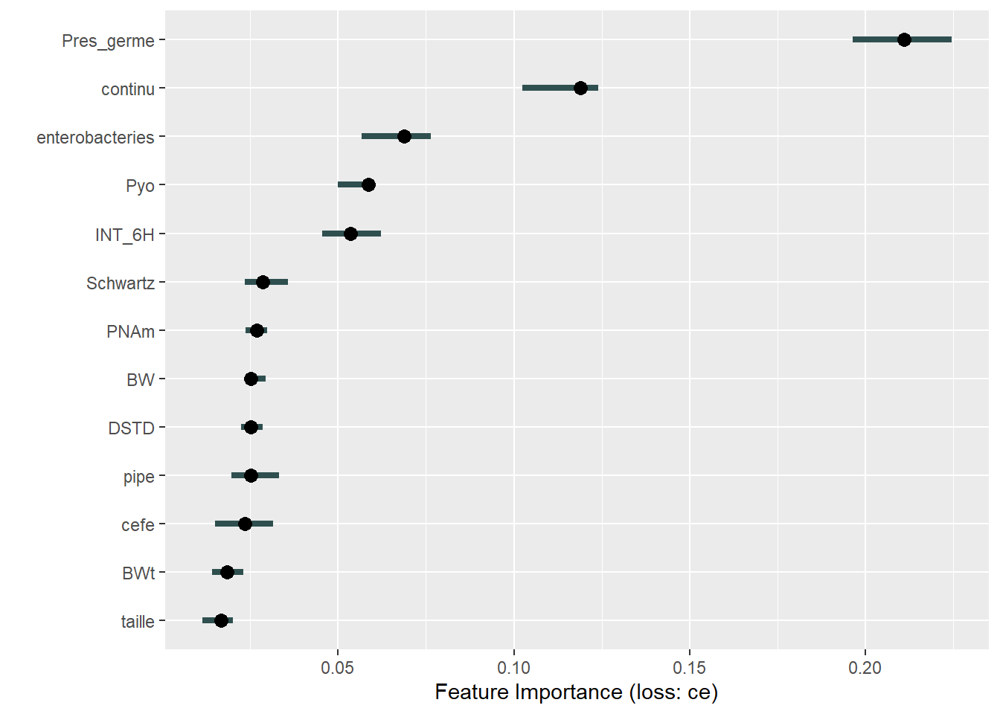
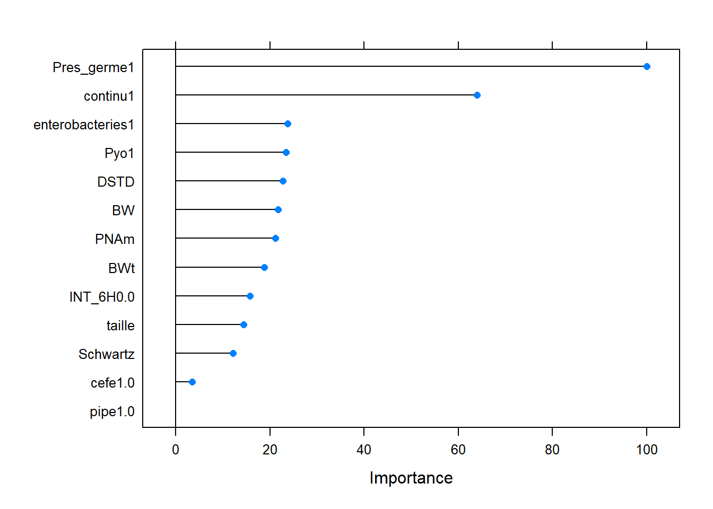
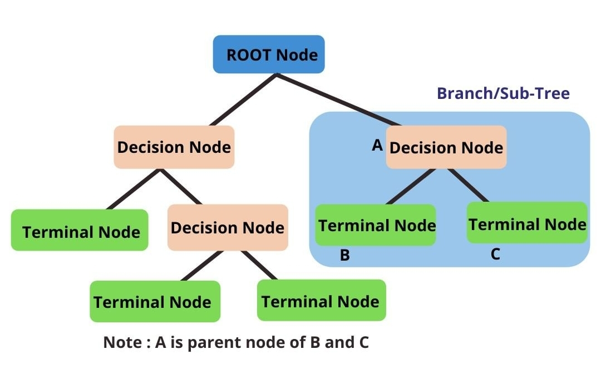
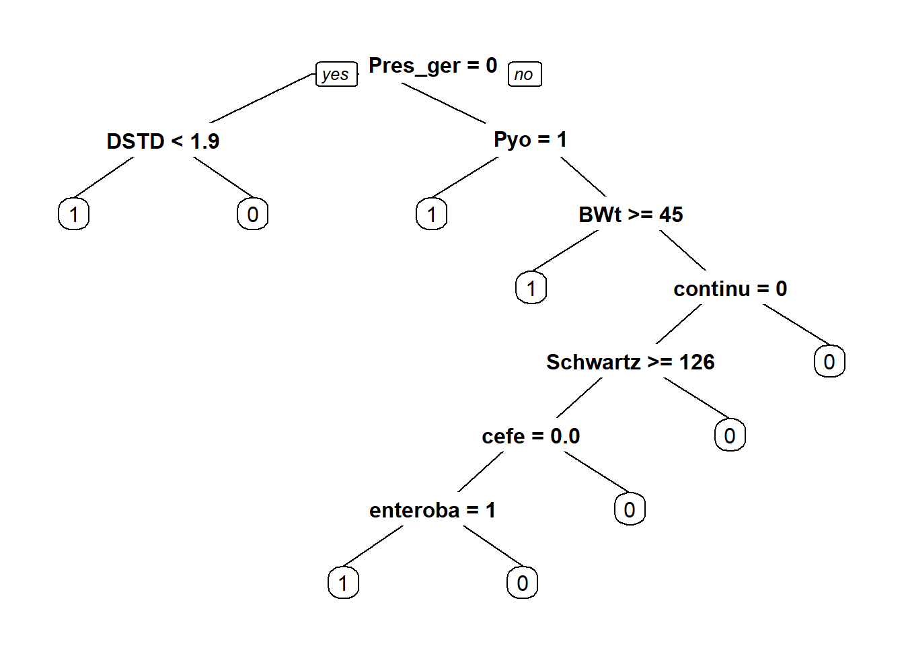

Chapitre 3 Modèle à 13 variables
##
## Attachement du package : 'readr'## L'objet suivant est masqué depuis 'package:scales':
##
## col_factor## Les objets suivants sont masqués depuis 'package:vroom':
##
## as.col_spec, col_character, col_date, col_datetime, col_double,
## col_factor, col_guess, col_integer, col_logical, col_number,
## col_skip, col_time, cols, cols_condense, cols_only, date_names,
## date_names_lang, date_names_langs, default_locale, fwf_cols,
## fwf_empty, fwf_positions, fwf_widths, locale, output_column,
## problems, spec3.1 Vue des données
library(skimr)
skimmed_ts <- skim(df_third_selection)
skimmed_tsLes prédicteurs catégoriels retenus sont :
cefepime, informant sur l’utilisation de la cefepime.
piperaciline, informant sur l’utilisation de la piperaciline.
continu, informant sur le caractère continu de l’administration.
INT_6H, informant sur le choix d’un intervalle de dose de 6H en cas d’administration non continue.
Pres_germe, informant sur l’identification du germe.
enterobacteries, informant sur le type de germe (enterobacteries) en cas d’identification.
Pyo, informant sur le type de germe (Pyo) en cas d’identification.
Les prédicteurs quantitatifs sont :
DSTD, informant sur la quantité de dose administrée (nombre de fois la dose standard)
PNAm, âge du patient en mois.
taille, taille du patient.
BW, poids du patient à la naissance.
BWt, poids du patient lors de l’inclusion dans l’étude.
Schwartz, indice de Schwartz, reflet de la fonction rénale.
3.2 Entrainement, test et tuning du modèle
smp_size <- floor(0.75 * nrow(df_third_selection))
set.seed(123)
train_ind_df_third_selection <- sample(seq_len(nrow(df_third_selection)), size = smp_size)
train_df_third_selection <- df_third_selection[train_ind_df_third_selection, ]
test_df_third_selection <- df_third_selection[-train_ind_df_third_selection, ]rf_grid <- expand.grid(mtry = seq(5:10),
splitrule = c("gini", "extratrees"),
min.node.size = c(1, 3, 5)
)
group_fit_control <- trainControl(method = "cv", number = 10)model_rf_third_selec <- caret::train(Proba ~ ., data = train_df_third_selection,method = "ranger", #random forest
trControl = group_fit_control, tuneGrid = rf_grid,importance="impurity")model_rf_third_selec$bestTune## mtry splitrule min.node.size
## 23 4 extratrees 33.3 Matrice de confusion
test_third_selection <- test_df_third_selection[which(names(test_df_third_selection) != "Proba")]
predicted_third_selection <- predict(model_rf_third_selec, test_third_selection)
caret::confusionMatrix(test_df_third_selection$Proba, predicted_third_selection)## Confusion Matrix and Statistics
##
## Reference
## Prediction 1 0
## 1 66 11
## 0 5 68
##
## Accuracy : 0.8933
## 95% CI : (0.8326, 0.9378)
## No Information Rate : 0.5267
## P-Value [Acc > NIR] : <2e-16
##
## Kappa : 0.787
##
## Mcnemar's Test P-Value : 0.2113
##
## Sensitivity : 0.9296
## Specificity : 0.8608
## Pos Pred Value : 0.8571
## Neg Pred Value : 0.9315
## Prevalence : 0.4733
## Detection Rate : 0.4400
## Detection Prevalence : 0.5133
## Balanced Accuracy : 0.8952
##
## 'Positive' Class : 1
## 3.4 Importance des variables
X_third_selection <- df_third_selection[which(names(df_third_selection) != "Proba")]
predictor_third_selection <- Predictor$new(model_rf_third_selec, data = X_third_selection, y = df_third_selection$Proba)3.4.1 Méthode de permutation
imp <- FeatureImp$new(predictor_third_selection, loss = "ce", compare = "difference", n.repetitions = 5)
plot(imp)
importance_gini_opt_rf <- varImp(model_rf_third_selec)
plot(importance_gini_opt_rf)
3.4.2 LIME
(Non compilé, utilisé pour déterminer les effets des variables sur une instance précise)
model_randomforest <- caret::train(Proba ~ ., data = train_df_third_selection,method = "rf", #random forest
trControl = group_fit_control)#LIME
library("lime")
explainer_2 <- lime(train_df_third_selection, model_randomforest)#lime
explanation_2 <- lime::explain(test_df_third_selection[1, 1:13], explainer_2, n_labels = 1, n_features = 13)
plot_explanations(explanation_2)
plot_features(explanation_2)
lime.rf <- LocalModel$new(predictor_third_selection, k = 12, x.interest = X_third_selection[1,])
plot(lime.rf)
shapley.rf <- Shapley$new(predictor_third_selection, x.interest = X_third_selection[1,])
plot(shapley.rf)
predict(model_randomforest, test_df_third_selection[1, ])
test_df_third_selection[1,14]3.5 ALE - effets des variables
(Non compilé, utilisé pour déterminer les effets des variables sur des intervalles de valeurs)
ale_entero <- FeatureEffect$new(predictor_third_selection, feature = "enterobacteries")
ale_entero$plot()
ale_pyo <- FeatureEffect$new(predictor_third_selection, feature = "Pyo")
ale_pyo$plot()
ale_continu <- FeatureEffect$new(predictor_third_selection, feature = "continu")
ale_continu$plot()
ale_INT_6H <- FeatureEffect$new(predictor_third_selection, feature = "INT_6H")
ale_INT_6H$plot()
ale_cefe <- FeatureEffect$new(predictor_third_selection, feature = "cefe", grid.size = 5)
ale_cefe$plot()
ale_pipe <- FeatureEffect$new(predictor_third_selection, feature = "pipe", grid.size = 5)
ale_pipe$plot()# FeatureEffect plots support up to two features:
eff <- FeatureEffect$new(predictor_third_selection, feature = c("taille", "PNAm"))
eff$plot(show.data = TRUE)
eff <- FeatureEffect$new(predictor_third_selection, feature = c("taille", "BWt"))
eff$plot(show.data = TRUE)
eff <- FeatureEffect$new(predictor_third_selection, feature = c("PNAm", "BWt"))
eff$plot(show.data = TRUE)
eff <- FeatureEffect$new(predictor_third_selection, feature = c("BWt", "DSTD"))
eff$plot(show.data = TRUE)
eff <- FeatureEffect$new(predictor_third_selection, feature = c("taille", "DSTD"))
eff$plot(show.data = TRUE)
eff <- FeatureEffect$new(predictor_third_selection, feature = c("PNAm", "DSTD"))
eff$plot(show.data = TRUE)3.6 Un arbre au lieu d’une forêt ?
Historiquement, l’arbre de décision était utilisé bien avant les forêts aléatoires.
Voyons ce que donnerait un arbre de décision sur nos données.

tree_third <- rpart(Proba ~ ., data=train_df_third_selection)
prp(tree_third)
tree_third## n= 447
##
## node), split, n, loss, yval, (yprob)
## * denotes terminal node
##
## 1) root 447 206 1 (0.53914989 0.46085011)
## 2) Pres_germe=0 199 40 1 (0.79899497 0.20100503)
## 4) DSTD< 1.895 184 25 1 (0.86413043 0.13586957) *
## 5) DSTD>=1.895 15 0 0 (0.00000000 1.00000000) *
## 3) Pres_germe=1 248 82 0 (0.33064516 0.66935484)
## 6) Pyo=1 33 2 1 (0.93939394 0.06060606) *
## 7) Pyo=0 215 51 0 (0.23720930 0.76279070)
## 14) BWt>=44.5 12 2 1 (0.83333333 0.16666667) *
## 15) BWt< 44.5 203 41 0 (0.20197044 0.79802956)
## 30) continu=0 151 41 0 (0.27152318 0.72847682)
## 60) Schwartz>=126.034 83 33 0 (0.39759036 0.60240964)
## 120) cefe=0.0 45 21 1 (0.53333333 0.46666667)
## 240) enterobacteries=1 21 4 1 (0.80952381 0.19047619) *
## 241) enterobacteries=0 24 7 0 (0.29166667 0.70833333) *
## 121) cefe=1.0 38 9 0 (0.23684211 0.76315789) *
## 61) Schwartz< 126.034 68 8 0 (0.11764706 0.88235294) *
## 31) continu=1 52 0 0 (0.00000000 1.00000000) *test_df_third_selection_x <- test_df_third_selection[which(names(test_df_third_selection) != "Proba")]
predicted_third_selection <- predict(tree_third, test_df_third_selection_x)
predicted_third_selection <- as.factor(ifelse(predicted_third_selection[,1] < .5, 0, 1))
caret::confusionMatrix(reference = test_df_third_selection$Proba, data = predicted_third_selection, positive = "1")## Warning in confusionMatrix.default(reference = test_df_third_selection$Proba, :
## Levels are not in the same order for reference and data. Refactoring data to
## match.## Confusion Matrix and Statistics
##
## Reference
## Prediction 1 0
## 1 62 16
## 0 15 57
##
## Accuracy : 0.7933
## 95% CI : (0.7197, 0.8551)
## No Information Rate : 0.5133
## P-Value [Acc > NIR] : 1.184e-12
##
## Kappa : 0.5862
##
## Mcnemar's Test P-Value : 1
##
## Sensitivity : 0.8052
## Specificity : 0.7808
## Pos Pred Value : 0.7949
## Neg Pred Value : 0.7917
## Prevalence : 0.5133
## Detection Rate : 0.4133
## Detection Prevalence : 0.5200
## Balanced Accuracy : 0.7930
##
## 'Positive' Class : 1
## 3.7 Bilan
La forêt entière, à 94 variables, a **91% de précision.
La forêt optimisée, réduite à 13 variables, a 86,6%.
L’arbre seul, à 13 variable, a 79,3%.
Ce projet a permis d’identifié les variables les plus importantes pour optimiser le modèle, en vue de son utilisation.
Pour utiliser ses modèles en ligne, il faut faire appel aux compétences d’un data engineer.